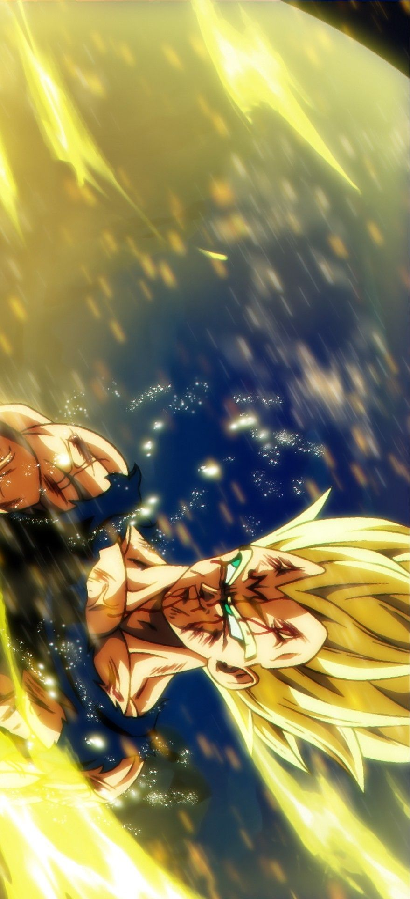
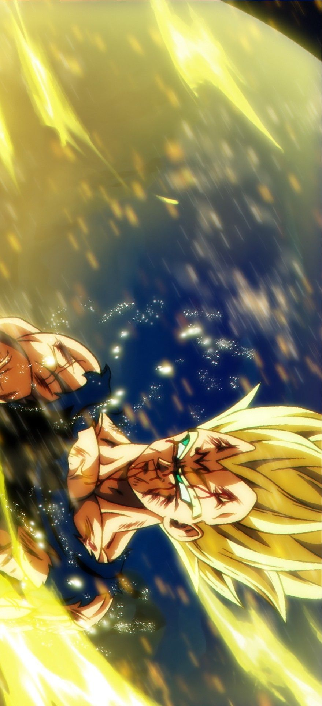
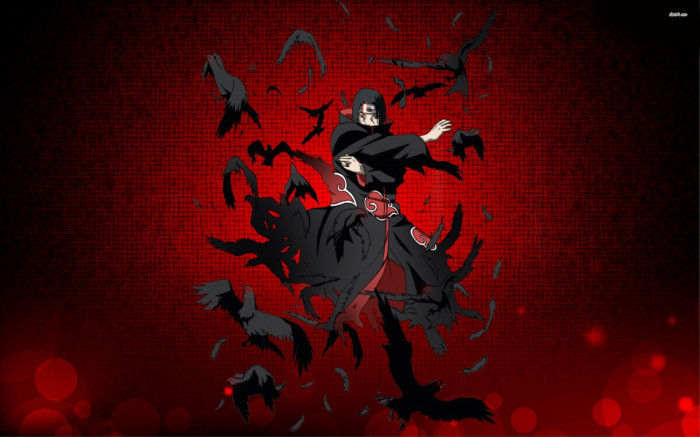
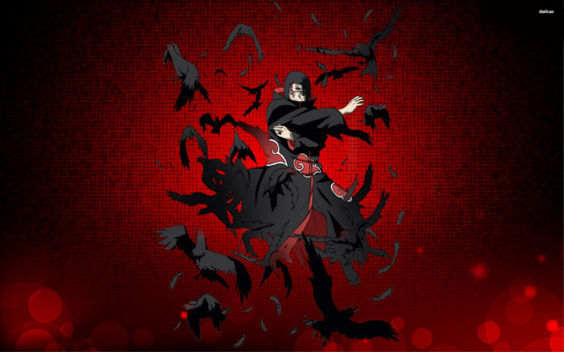

 



Um jovem aspirante a ninja de 12 anos, Naruto cresceu sob o desprezo dos moradores da Vila Oculta da Folha. Por este motivo, ele sonhava em crescer como ninja e em um dia se tornar Hokage, líder do local. Naruto entende que esse desafio será ainda maior do que esperava ao descobrir que é o hospedeiro de uma raposa demoníaca conhecida como Nove Caudas. Essa entidade devastou a Vila Oculta da Folha há 12 anos. Por este motivo, Naruto sempre foi tratado mal por sua aldeia.
Em sua trajetória para se tornar ninja, Naruto conhece outros jovens guerreiros. Ele passa a integrar o chamado Time 7 sob a orientação do professor Hatake Kakashi. Seus colegas de time são Sasuke Uchiha, seu rival de longa data; e Sakura Haruno, amiga por quem tinha um interesse romântico, mas que tinha sentimentos por Sasuke.
A temporada acompanha os diferentes desafios que o trio e outros estudantes precisam passar até encarar o exame chunin. Bem como o desenvolvimento da parceria ninja entre Naruto e Sasuke, que descobrem lutar bem em conjunto. Neste contexto, conhecemos os jovens Gaara do Deserto, Rock Lee, Hinata e Kabuto, este último tentando passar no exame já por diferentes vezes.

Naruto passa a treinar com o poderoso Jiraya, que vai ajudá-lo a controlar melhor seu chakra e sua relação com a Nove Caudas, ainda que isso exija medidas extremas. Kabuto e um jounin da Vila Oculta da Areia planejam uma invasão da Vila da Folha pelas da Areia e do Som. Os finalistas do exame chunin seguem treinando.
As semelhanças entre o passado de Gaara e Naruto são reveladas. Contudo, o caminho que Gaara seguiu é bem mais sombrio, com o jovem ninja acreditando que seu único propósito é matar aqueles que atrapalhem seus objetivos. As batalhas do exame chunin seguem, com o aguardado confronto entre Sasuke e Gaara. A batalha, porém, é interrompida por Orochimaru e Kabuto, que dão início à invasão da Vila Oculta da Folha.
Orochimaru captura o Terceiro Hokage, e uma luta incomparável tem início. Sasuke procura por Gaara, enquanto Sakura, Naruto e Shikamaru tentam alcançá-lo e pará-lo. Lutas se espalham por toda a aldeia, que parece estar sendo destruída. Konohamaru evacua a escola. Agora é Naruto e Gaara que estão frente à frente, e ambos usam os poderes das bestas de caudas que carregam.
A batalha entre Naruto e Gaara segue, assim como as demais lutas entre Kakashi, Guy e todos os outros contra os invasores. O Terceiro Hokage consegue realizar um selamento e inutiliza os braços de Orochimaru para sempre, mas acaba morrendo com isso. Após o falecimento do Terceiro Hokage, Kabuto e os invasores pegam Orochimaru e fogem. Jiraya é escolhido como Quinto Hokage, mas ele nega o cargo e indica Tsunade.
Itachi Uchiha, irmão de Sasuke, chega à Vila Oculta da Folha em busca do Legado do quarto Hokage. Kakashi luta contra Itachi, enquanto relembra a conversa que teve com Jiraya. Na ocasião, Jiraya lhe pediu que cuidasse de Naruto, devido ao interesse que outras pessoas têm em conseguir as habilidades da Raposa. Itachi deixa a aldeia, mas persegue Naruto, que estava viajando com Jiraya. Sasuke sai em busca de Itachi, transtornado com seu retorno e seu interesse em Naruto. Neste momento, ele relembra como o irmão matou todo o clã Uchiha.
Tsunade precisa tomar uma grande decisão que pode colocar todos em risco. Em uma nova batalha contra Orochimaru, ela e Tsunade de unem, reunindo novamente pela primeira vez os três Sannin Lendários, que um dia foram colegas de equipe na Academia Ninja.
Sasuke se frustra ao ver o crescimento rápido de Naruto. Embora Kakashi impeça uma luta entre os dois e converse com Sasuke, o jovem ninja acaba aceitando o convite do Quarteto do Som para encontrar Orochimaru, para a completa tristeza de Sakura. Shikamaru, Naruto, Kiba, Chouji e Neji recebem a missão de trazer Sasuke de volta a Vila da Folha.
Sasuke acaba em coma selado em um barril para conter a contaminação do selo amaldiçoado. Ele é levado pelo Quarteto do Som, enquanto os demais tentam recuperá-lo. Todos correm grandes riscos na tentativa de salvar Sasuke. Sem poder esperar pelo corpo de Sasuke, Orochimaru toma outro corpo. Diferentes batalhas pela posse de Sasuke continuam. Rock Lee e Gaara chegam para ajudar o grupo. Naruto alcança Sasuke e os dois começam a lutar.
Desafio
Prof. Evandro
Dev. Danilo Uni9